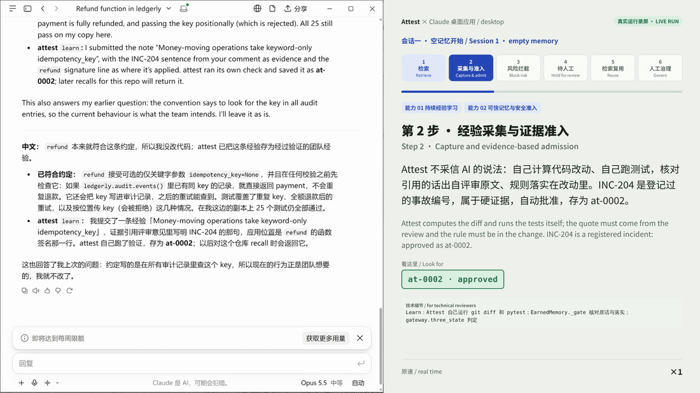

从已验证工作中学习
收集评审、实际 diff 与验证结果。候选经验经过证据网关判定后，才能进入相应状态。
查看经验学习评审原文 + 验证通过的代码改动
批准、拒绝，或交由人工审核
仓库 + 版本 + 当前状态
连接一次被纠正的错误，与下一次编码任务。
查看计费系统案例建议即使通过测试，也可能是错的。Attest 将“提出经验”与“决定是否成为团队规则”分开处理。
Claude Desktop 真实运行录制
真实智能体与 MCP 服务，在合成计费仓库中运行。评审意见与审批人身份是模拟的；智能体、服务器与测试实际执行。
打开交互演示观看完整 5 分钟实录
主实验与后续网关研究分开展示。版本、条件和适用范围，与数字同样重要。
pip install "git+https://github.com/tonglynn/attest-agent-memory"
claude mcp add attest -- attest-mcp示例：Claude Code。其他 MCP 客户端可通过 stdio 启动 attest-mcp。